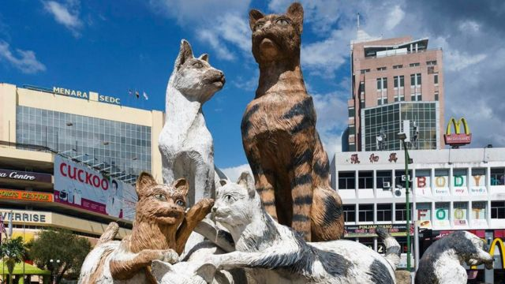
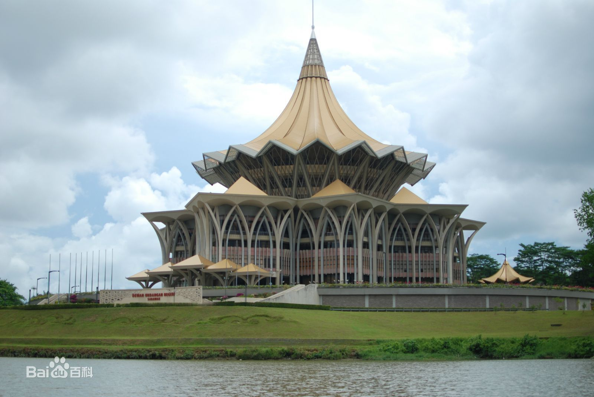

城市特色
古晋是马来语，它的意思是猫，当地人是非常喜欢猫的，古晋的城市标志是一只可爱的白猫，沿河两岸的高脚长屋，更是古晋特色。近河口处建有本丁港，河边有市场、码头和干船坞，城东有小型工业区及新港丹那普提。有农产品加工、锯木、肥皂、成衣、制鞋等工业。南面的布索，有世界最大熔锑厂。公路伸入内地山区和矿场，州内大部分地区物资由此运新加坡转口。有著名的砂拉越博物院和水族馆。居民从事木雕、陶器、纺织品、贝壳、装饰品的制作。东部为新工业区，沿河下游4公里处是丹那普提新港，近区有古晋国际机场。
人口民族
古晋的南市人口有193,500人；北市人口有183,600人；巴达万区有352,800人。主要是马来人、华人、印度裔、达雅人等。 住在古晋市区的华人以客家人居多。客家人多务农，福建人及诏安人又以从事商业及建筑业为主，兴化人多从事渔业、轮胎等零件业，海南人多经营咖啡店，潮州人多经营杂货业，福州人也多数从商，还有金融及木材业。 虽然马国是以伊斯兰教为国教，但仍属于宗教自由的国度，本地华人多信奉佛教、道教、基督教、天主教等等。最广为人知的，是青山岩的寺庙及“寿山亭大伯公庙”。 古晋是座民风淳朴的城市，跟其他大城市比较起来，古晋人的生活较悠闲，步伐没那么匆忙。 古晋更有一历史博物馆，展示之历史文物，堪称东南亚最丰富的博物馆。里头拥有许多当地的古物及文明。